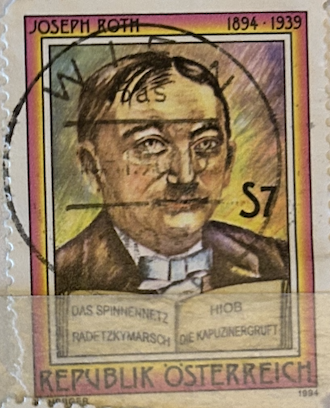
| SOURCE | TITLE| IMAGE MATCH | click to source page |
| eBay | 1994 Austria SC# 1661 - Joseph Roth(1894-1939), Writer - Used | eBay | 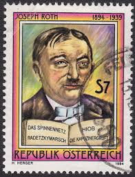 |
| Todocolección | joseph roth - la marcha de radetzky - 1981 - Buy Used historical novel books on todocoleccion | 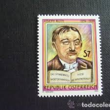 |
| Tablet Magazine | The Curse of Joseph Roth - Arts & Letters - Tablet Magazine | 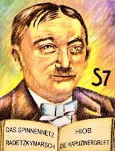 |
| eBay | Austria 1994 FRANZ THEODOR CSOKOR, JOSEPH ROTH, WRITERS SC 1660-61 MNH | eBay | 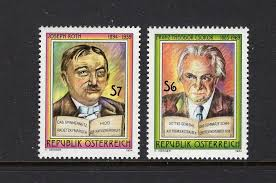 |
| Amazon.com | Amazon.com: Austria 2136-2137 (Complete.Issue.) fine Used/Cancelled 1994 Writers (Stamps for Collectors) : Toys & Games | 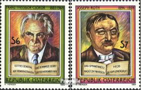 |
| eBay | Austria - 1994 - Famous Austrian Writers Complete Set of 2 #1660 - #1661 Mint NH | eBay | 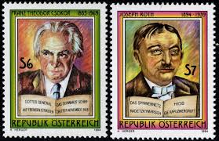 |
| eBay | Austria 1976, Constantin von Economo (1876-1931), doctor VF MNH, Mi 1518 | eBay | 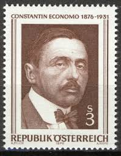 |
| eBay | Austria #1040 MNH | eBay | 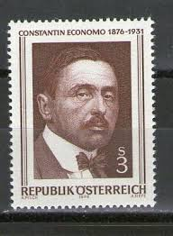 |
| Почтовые марки Украины | Buy 1972 Cuba Stamp (Frank Piece) Used №1789 | 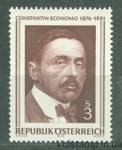 |
| eBay | MAXIMUM POSTCARD sent by ITALIAN PHILATELISTS to Victor Perantoni in AUS - 1950 | eBay | 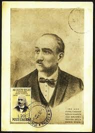 |
| eBay | Austria 1976 CONSTANTIN ECONOMO M.D. NEUROLOGIST SC 1040 MNH | eBay | 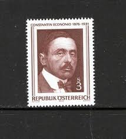 |
| eBay | AUSTRIA 1040 - Constantin Economo "Neurologist" (pb79712) | eBay | 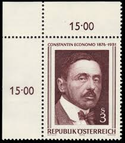 |
| Alamy | AUSTRIA - 1968: A stamp printed in Austria, is shown Koloman Moser, Stamp Designer, Painter Stock Photo - Alamy | 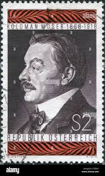 |
| Todocolección | austria año 2017. moto puch 150 sr - Buy Antique stamps of Austria on todocoleccion | 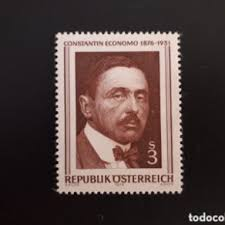 |
| eBay | Austria 1968 Painting Drawing Postage Stamp Printmaking Artists People 1v MNH | eBay | 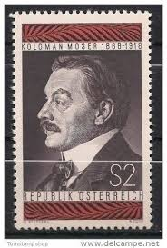 |
| eBay | France #YT1070 MNH 1956 Maurice Barrès [B307] | eBay | 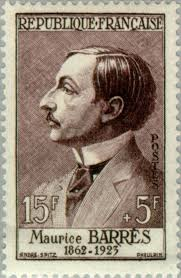 |
| eBay | Finland Cinderella Stamps for sale | eBay | 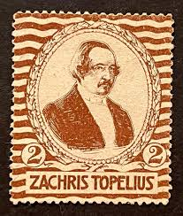 |
| eBay | 1928 Silent Film Movie Card of ADOLPHE MENJOU The Sorrows of Satan Ace of Cads | eBay | 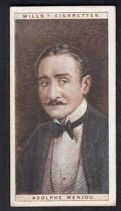 |
| Todocolección | 1976: constantin economo (mnh**) - Buy Antique stamps of Austria on todocoleccion | 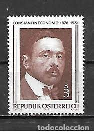 |
| eBay | Austria 1968 KOLOMAN MOSER, STAMP DESIGNER, PAINTER SC 818 MNH | eBay | 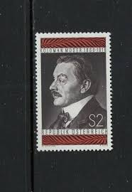 |
| Mystic Stamp Company | 2218d - 1986 22c AMERIPEX '86: Grover Cleveland - Mystic Stamp Company | 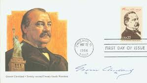 |
| Penn State University | Timeline of Philatelic Literature, 1830 - 1875 | 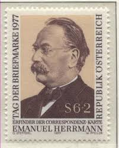 |
| gbenzi.it | stamps exchange, catalogue Austria 1970 Austria 1970 | 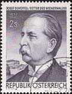 |
| eBay | ARGENTINA 663 - Roque Saenz Pena "President" (pf21285) | eBay | 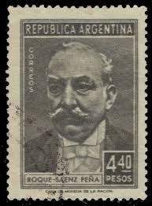 |
| HipPostcard | 292921 BULGARIA 1949 year communist politician Georgi Dimitrov maximum card | Topics - People - Authors, Postcard / HipPostcard | 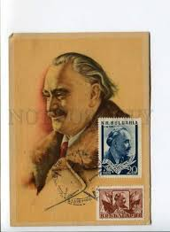 |
| eBay | 099 - YUGOSLAVIA 1971 - Slovenia - Frano Supilo - ERROR - MNH | eBay | 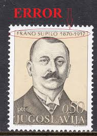 |
| Nikon Cafe | CS #958 - Paper | Page 2 | Nikon Cafe | 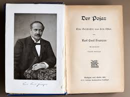 |
| Granger - Historical Picture Archive | Image of PERSONALITIES. - Ziehrer, Carl Michael, 2.5.1843 - 14.11.1922, Austrian Composer, Conductor, Portrait, Stamp, Printed On The 50th Day Of His Death, Austria, Full Credit: INTERFOTO / Friedrich / Granger, NYC -- | 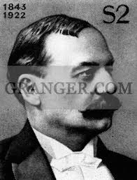 |
| eBay | 1917 Press Photo Dr. Orestes Ferrara, Speaker of Cuban House of Representatives | eBay | 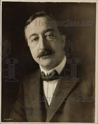 |
| Pianorarescores | Otakar Šín Spring Songs Op.6 Svoji Zeni Erotic Kiss piano scores | 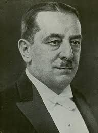 |
| eBay | Austria Y03 MNH 1972 Blocks set 4v Famous person Composer | eBay | 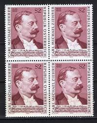 |
| Dreamstime.com | Postage Stamp Printed in Czechoslovakia Shows FrantiÅ¡ek Å kroup 1801-1862, 20 H - Czechoslovak Haléř, Anniversary Cultural Editorial Photo - Image of anniversary, people: 161671266 | 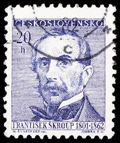 |
| MeisterDrucke | Alexander III by English School: Buy fine art print | 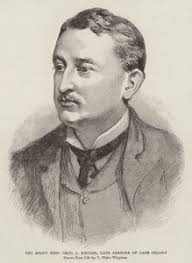 |
| eBay | Austria 1983, Victor Franz Hess, Europa Cept set VF MNH, Mi 1743 1,5€ | eBay | 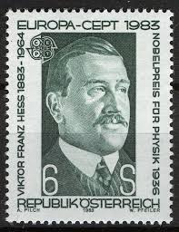 |
| Shutterstock | Vienna Austria Dec 2 1977 Emanuel Stock Photo 638863720 | Shutterstock | 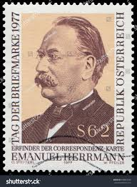 |
| Period Paper Historic Art LLC | 1900 Print Silas Gamaliel Pratt Portrait Music Composer Opera Victoria – Period Paper Historic Art LLC | 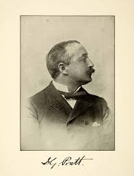 |
| TouchStamps | Stamp: Adolf O. R. Windaus (1928) Chemistry (Uganda 1995) - TouchStamps | 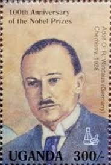 |
| Alamy | Georgios stavros hi-res stock photography and images - Alamy | 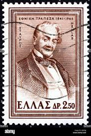 |
| classicmusiccds.com | ITALIAN BASS ARISTODEMO SILLICH (1858-1943) CDR – WELCOME TO CLASSIC MUSIC CDs | 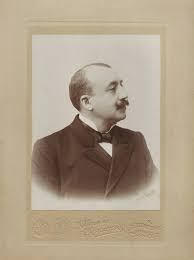 |
| eBay | Russia 1648 2 colors, CTO. Mi 1651. A.I. Odoyevski, poet, 150th birth Ann. 1952. | eBay | 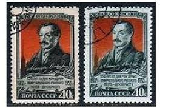 |
| eBay | US #2755 MNH 1993 Dean Acheson Secretary State Slania | eBay | 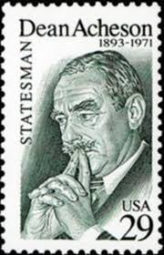 |
| eBay | Russia 1956 Ivan Franko,Ukrainian writer,journalist,ethnograph,Mi.1904,MNH | eBay | 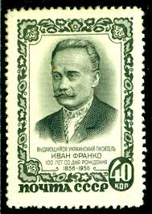 |
| eBay | Austria #1000 MNH | eBay | 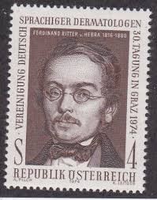 |
| eBay | O) 1971 FRANCE, CHEMICAL VICTOR GRIGNARD, NOBEL PRIZE IN CHEMISTRY 1912, MAXIMUM | eBay | 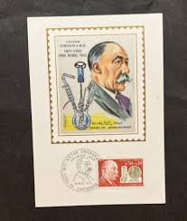 |
| Colnect | Stamp: Stefan Zweig (Albania(Distinguished National Personalities) Mi:AL 3555,Sn:AL 3001c,Yt:AL 3219,Sg:AL 3536,AFA:AL 3616,Un:AL 3555 📮 | 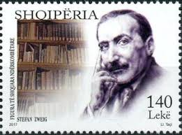 |
| eBay | AUSTRIA 1160 - Leo Ascher "Composer" (pc23218) | eBay | 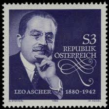 |
| eBay | Beef Baron' Magnate J OGDEN ARMOUR of CHICAGO Vintage 1910s Press Photo | eBay | 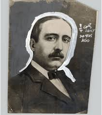 |
| Media Storehouse | Giacomo Puccini Print: Italian School Charcoal Portrait. Art Prints, Posters & Puzzles from Fine Art Finder | 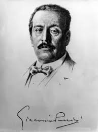 |
| Allposters | Cecil Rhodes', (1853-1902), English-born South African entrepreneur and statesman, 1894-1907 Photographic Print - Alexander Bassano | AllPosters.com | 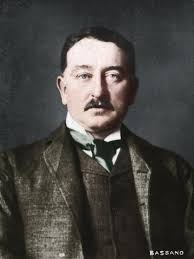 |
| chessonstamps.org | Chesstamp Review #159 (Jul-Sep 2015) 20 COSSU Auction #159 | |
| Wikipedia | Birger Stuevold-Hansen - Wikipedia | |
| eBay | Austria 1981, Johan Florian Heller (1813-1871) Chemist VF MNH, Mi 1676 | eBay | |
| Amazon.com | Amazon.com: Photo: Cecil John Rhodes,1853-1902,Prime Minister of Cape Colony,Mining magnate : Home & Kitchen | |
| Shutterstock | 18 Albert Ballin Royalty-Free Images, Stock Photos & Pictures | Shutterstock | |
| Wikimedia.org | Category:Marià Foix i Prats - Wikimedia Commons |